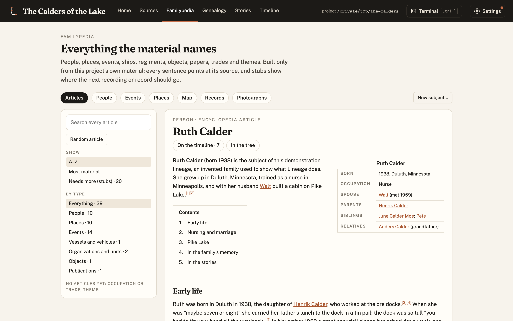

Blog · 15 October 2026
New: a Getting started guide and a Quickstart
Lineage now has two front doors.
Getting started is for someone who has never used it. It explains what Lineage is, what you need, and what the first week looks like, with a screenshot of every step.

Quickstart is for getting going. It covers installing Lineage, starting a family's project, loading it into Claude Code, and then a series of ready-to-paste prompts, drawn from writing a real family's book, for:
- cataloguing and restoring the photographs and documents the family has;
- sending research agents out for public records, respecting robots.txt, with no logins or paywalls;
- checking a published book's copyright before using it;
- drafting requests to archives, libraries and museums. Every email waits in your drafts until you say "send it";
- watching the inbox for replies and ingesting what arrives;
- writing a Familypedia article and a chapter for each relative, with every paragraph cited;
- keeping private what the family wants kept private, and publishing the rest.
Every prompt keeps the same rule: nothing is sent, paid, published or invented without your approval.